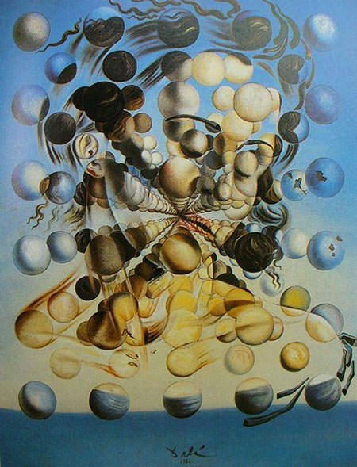
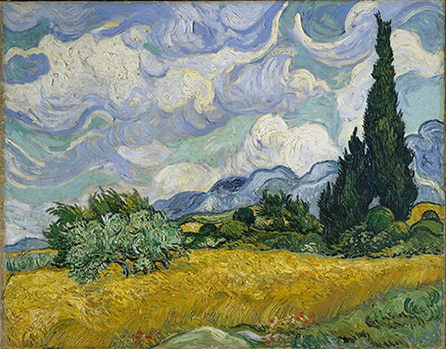

I find it fascinating how many different techniques and styles in drawing there exist. Which is my there are many artists who inspire me and motivate to draw more.
Maurits Cornelis Escher was a Dutch graphic artist. In his work he explored impossible constrictions and ways to make impossible possible.
“Relativity”, one of his famous drawings:

Salvador Dalí, Spanish artist who also inspires me. He is known for his remarkable and bizarre work in paintings, photography, sculptures, jewelry and many more.
“Galatea of the Spheres”, his famous painting that I really like.
Vincent van Gogh, Dutch Post-Impressionist painter, is one more example of my inspiration. His unique use of color and portrayal of the world really make him stand out. The way he expressed his feeling and point of you of the world is outstanding.
“Wheatfield with Cypresses” , is one of my favorite paintings of his.
